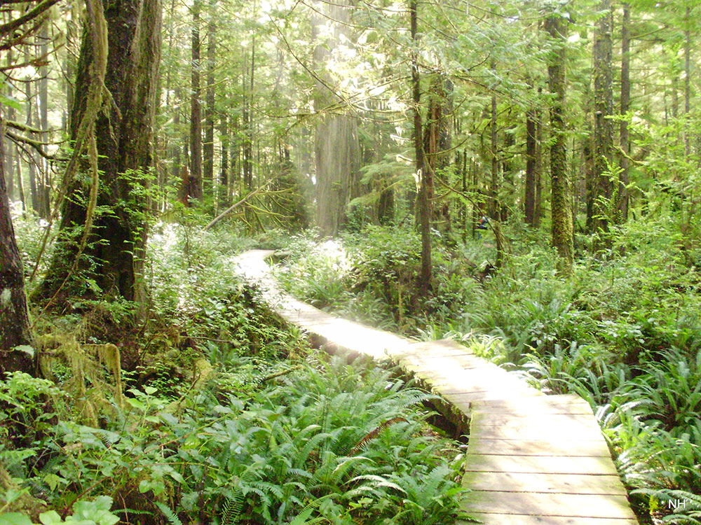
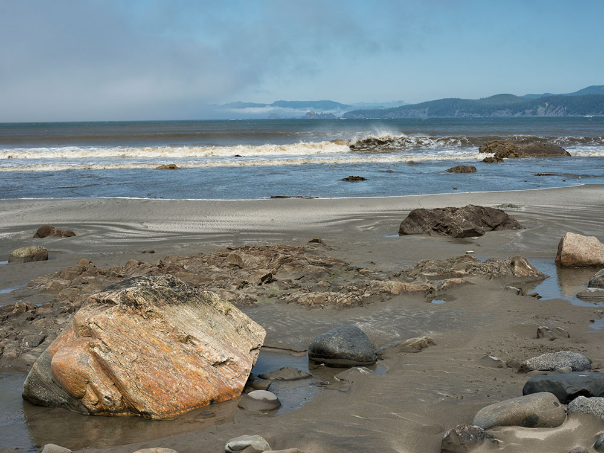

Park area located on the northwestern coast of the Olympic Peninsula, containing tall seastacks that dot the coast, crystal waters of Lake Ozette, and grandeur of old growth forests
General Information
Valid for seven consecutive days. Applies to private, non-commercial vehicles (15 passenger capacity or less). The pass covers all vehicle occupants.
Motorcycle: $25.00
Per Person and Bicyclists - $15.00
Valid for seven consecutive days. This fee admits one person without a vehicle, including hikers, bicyclists, and pedestrians. Individuals fifteen years or younger are admitted free of charge.
Accepts America The Beautiful Pass.
How to Get There
From Port Angeles: Take WA-112 W to Hoko Ozette Rd/Ozette Lake Rd. Follow Hoko Ozette Rd to destination
Overview
Whether it's the tall seastacks that dot the coast, the crystal waters of Lake Ozette, or the grandeur of the old growth forests, the landscape of Ozette is full of opportunities to explore a diverse landscape. Ozette is located on the northwestern coast of the Olympic Peninsula. This area is reached by Hoko-Ozette Road off Highway 112. Lake Ozette is also a place of rich history. Discoveries in the past century have unearthed the presence of a culture dating back at least 2,000 years, as well as a well-preserved 300-year-old village that had been covered by a mudslide. Over 50,000 artifacts were recovered, many of which now reside at the Makah Cultural and Research Center in Neah Bay.
Places to Stay
The campground at Ozette sits next to Lake Ozette and has 15 sites with great views of the lake. Cabin rentals and campsites are available just outside the park boundary at Ozette, and the nearby towns of Clallam Bay and Sekiu also provide lodging.
Recreation
Hiking along the coast is a highlight when visiting the area. Two three-mile boardwalk trails lead to the coast where seals and gray whales can be spotted during migratory months. A trail leading from the coast to Ericson's Bay of Lake Ozette is also a short hike. There are longer coastal hiking trails as well, including the Ozette Loop.
The Ozette River is a stream on the Olympic Peninsula in the state of Washington. It originates in the northwestern Olympic Mountains and empties into the Pacific Ocean.
The Ozette River originates in the northwestern portion of Olympic Peninsula at the north end of Ozette Lake at the town of Ozette. It flows generally northwest, emptying into the Pacific just north of Cape Alava. Its course passes through Ozette and Olympic National Park. The principal tributary of the Ozette River, via Ozette Lake, is the Big River.
Ozette Indian Village Archeological Site
The Ozette Indian Village Archeological Site is the site of an archaeological excavation on the Olympic Peninsula near Neah Bay, Washington. The site was a village occupied by the Ozette Makah people until a mudslide inundated the site around the year 1750. It is located in the now unpopulated Ozette Indian Reservation. The 22 mile long Hoko-Ozette Road, accessed via Washington State Route 112, terminates at the NPS Lake Ozette Ranger Station, within the coastal strip of Olympic National Park. The Lake Ozette Ranger Station, positioned at the north end of Ozette Lake, is approximately 3 miles from the archeological site.
Around 1560 (according to radiocarbon dating), a mudslide engulfed part of a Makah village along the coast of modern-day Washington near Lake Ozette. Archaeological test pits were excavated at the Ozette site in 1966 and 1967 by Richard Daugherty. However, it was not until 1970 that it became apparent what was buried there. After a storm in February 1970, tidal erosion exposed hundreds of well-preserved wooden artifacts. The excavation of the Ozette site began shortly after. University students worked with the Makah under the direction of archaeologists using pressurized water to remove mud from six buried long houses. The excavation went on for 11 years and produced over 55,000 artifacts, many of which are on display in the Makah Museum at the Makah Cultural and Research Center.
The mudslide preserved several houses and their contents in a collapsed state until the 1970s when they were excavated by Makahs and archaeologists from Washington State University. More than 55,000 artifacts were recovered, spanning a period of occupation around 2,000 years, representing many activities of the Makahs, from whale and seal hunting to salmon and halibut fishing; from toys and games to bows and arrows. Of the artifacts recovered, roughly 30,000 were made of wood, extraordinary in that wood generally decays particularly fast. Hundreds of knives were recovered, with blade materials ranging from mussel shell, to sharpened beaver teeth, and iron, presumed to have drifted from Asia on wrecked ships. The oral history of the Makah mentions a "great slide" which engulfed a portion of Ozette long ago. The Makah Museum opened in 1979 and displays replicas of cedar long houses as well as whaling, fishing, and sealing canoes.
Lake Ozette is the largest unaltered natural lake in Washington state at 29.5 km2 (11.4 sq mi). The Makah name for Lake Ozette was Kahouk meaning "large lake."8 mi (13 km) long and 3 mi (4.8 km) wide, Lake Ozette is contained within the northern boundary of the Olympic National Park's coastal strip. It is 29 ft (8.8 m) above sea level and is drained by the Ozette River in the north end. Ozette, Washington, lies at the north end of the lake. At 331 feet (101 metres) deep, its bottom lies more than 300 feet (91 metres) below sea level.
There are three islands on Lake Ozette: Tivoli, Garden Island, and Baby Island.Tivoli's sandy shore is a kayaking and canoeing destination for overnight tent campers willing to make the long trip down the lake. The Erickson's Bay campground is the only boat in campground in Olympic National Park.
Lake Ozette features several trails leading to the Pacific Coast Marine Sanctuary. Three of these trails are continuous cedar boardwalks maintained by the Olympic National Park Service. The two most traveled trails depart from the Olympic National Park information kiosks and restrooms at the north end of Lake Ozette. The northern trail is a cedar boardwalk leading to Cape Alava, passing through Ahlstrom's Prairie; the southern boardwalk trail leads to Sand Point and the Ozette Indian Petroglyphs at Wedding Rock. There are 54 petroglyphs found there. There is a shorter (2.5 mi (4.0 km)) boat-in only, well-maintained trail that heads out to the wild ocean beaches from Erickson's Bay on the northwestern side of Lake Ozette. Longer coastal hiking trails include the Ozette Loop, connecting the Sand Point and Cape Alava trails by hiking up or down the beach to the next trailhead. (About 9 mi (14 km).)
Two other trails include one heading to the beach just south of the Park-maintained trail from Erickson's Bay (Coast Guard Trail) and a trail from Allen's Bay out to Kayostla Beach. Both trails are undeveloped and known to be frequently muddy. The National Park Service maintains 15 sites at the main campground at the north end of the lake.
This article uses material from the Wikipedia article "Ozette River", "Ozette Indian Village Archeological Site", and "Ozette Lake", which is released under the Creative Commons Attribution-Share-Alike License 3.0
This article uses material from nps.gov "Olympic National Park"
Featured Trails
Cape Alava
A boardwalk trail through coastal forest leads to a rugged ocean shoreline with sea stacks, tide pools, and expansive Pacific views.


